Changes in PRIMAP-hist v2.6.1_final compared to v2.6_final for Burkina Faso
2025-03-19
Johannes Gütschow
Change analysis for Burkina Faso for PRIMAP-hist v2.6.1_final compared to v2.6_final
Overview over emissions by sector and gas
The following figures show the aggregate national total emissions excluding LULUCF AR6GWP100 for the country reported priority scenario. The dotted linesshow the v2.6_final data.
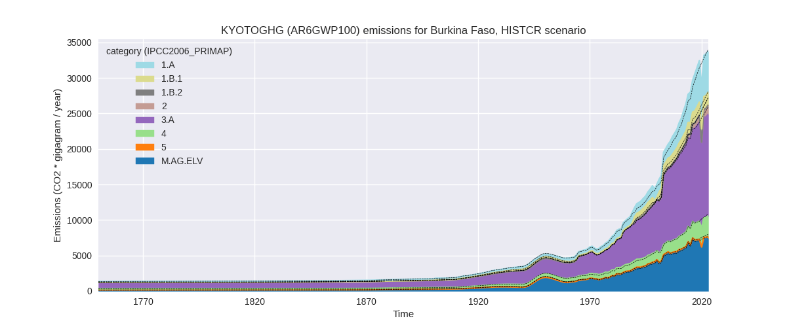
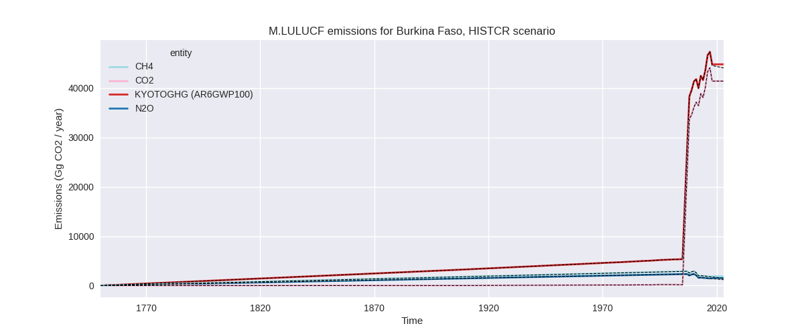
The following figures show the aggregate national total emissions excluding LULUCF AR6GWP100 for the third party priority scenario. The dotted linesshow the v2.6_final data.
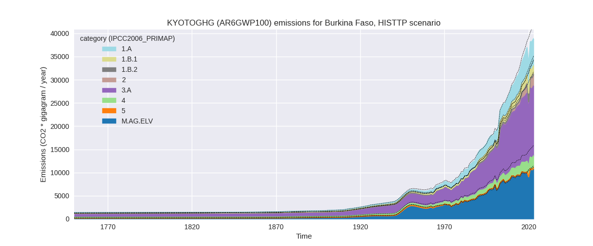
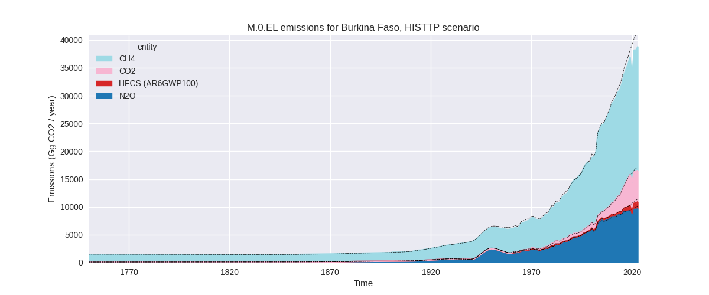
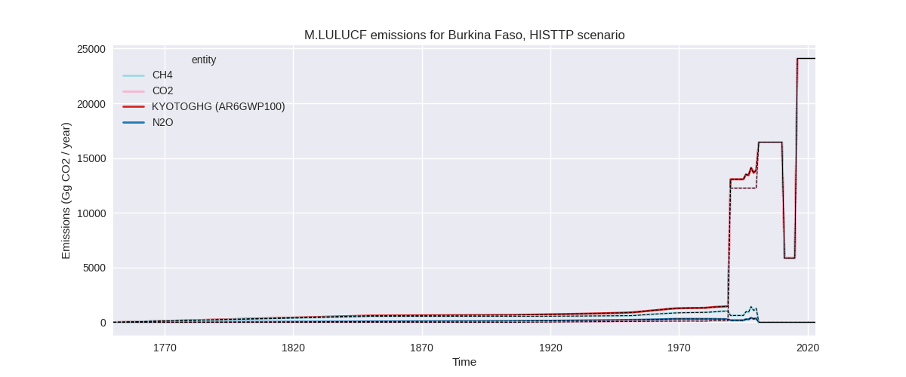
Overview over changes
In the country reported priority scenario we have the following changes for aggregate Kyoto GHG and national total emissions excluding LULUCF (M.0.EL):
- Emissions in 2023 have changed by -0.7%% (-233.87 Gg CO2 / year)
- Emissions in 1990-2023 have changed by 2.7%% (575.20 Gg CO2 / year)
In the third party priority scenario we have the following changes for aggregate Kyoto GHG and national total emissions excluding LULUCF (M.0.EL):
- Emissions in 2023 have changed by -7.3%% (-3048.18 Gg CO2 / year)
- Emissions in 1990-2023 have changed by -3.1%% (-813.95 Gg CO2 / year)
Most important changes per scenario and time frame
In the country reported priority scenario the following sector-gas combinations have the highest absolute impact on national total KyotoGHG (AR6GWP100) emissions in 2023 (top 5):
- 1: 1.B.1, CH4 with 940.45 Gg CO2 / year (109.8%)
- 2: 3.A, CH4 with -635.06 Gg CO2 / year (-4.3%)
- 3: M.AG.ELV, N2O with -300.14 Gg CO2 / year (-3.9%)
- 4: 3.A, N2O with -136.65 Gg CO2 / year (-33.6%)
- 5: 1.A, CH4 with -119.83 Gg CO2 / year (-9.9%)
In the country reported priority scenario the following sector-gas combinations have the highest absolute impact on national total KyotoGHG (AR6GWP100) emissions in 1990-2023 (top 5):
- 1: 1.B.1, CH4 with 726.27 Gg CO2 / year (130.6%)
- 2: 3.A, CH4 with -129.99 Gg CO2 / year (-1.3%)
- 3: M.AG.ELV, N2O with -58.46 Gg CO2 / year (-1.1%)
- 4: 4, CH4 with 30.31 Gg CO2 / year (1.9%)
- 5: 3.A, N2O with -14.39 Gg CO2 / year (-5.4%)
In the third party priority scenario the following sector-gas combinations have the highest absolute impact on national total KyotoGHG (AR6GWP100) emissions in 2023 (top 5):
- 1: 4, CH4 with -1830.85 Gg CO2 / year (-44.5%)
- 2: 1.B.1, CH4 with 940.45 Gg CO2 / year (109.8%)
- 3: 1.A, CH4 with -845.68 Gg CO2 / year (-39.8%)
- 4: 3.A, CH4 with -668.24 Gg CO2 / year (-4.3%)
- 5: M.AG.ELV, N2O with -347.04 Gg CO2 / year (-3.9%)
In the third party priority scenario the following sector-gas combinations have the highest absolute impact on national total KyotoGHG (AR6GWP100) emissions in 1990-2023 (top 5):
- 1: 4, CH4 with -1095.35 Gg CO2 / year (-44.9%)
- 2: 1.B.1, CH4 with 726.27 Gg CO2 / year (130.6%)
- 3: 1.A, CH4 with -218.73 Gg CO2 / year (-14.2%)
- 4: 3.A, CH4 with -136.79 Gg CO2 / year (-1.3%)
- 5: M.AG.ELV, N2O with -67.95 Gg CO2 / year (-1.1%)
Notes on data changes
Here we list notes explaining important emissions changes for the country.
- There is no new country reported data for Burkina Faso. As the
available country reported data does not cover all sectors the updated
third part data introduces changes in the CR scenario also for
cumulative emissions.
- The highest changes in the CR scenario are from CH4 in 1.B.1 (from the EDGAR update) both for 2023 and cumulative emissions. Further contributions come from agricultural data, where FAO data show updated values starting in 2020.
- Changes in the TP scenario are mostly for the same sectors with the addition over 40% lower emissions in the waste sector (CH4), which come from updated EDGAR data.
Changes by sector and gas
For each scenario and time frame the changes are displayed for all individual sectors and all individual gases. In the sector plot we use aggregate Kyoto GHGs in AR6GWP100. In the gas plot we usenational total emissions without LULUCF.
country reported scenario
2023
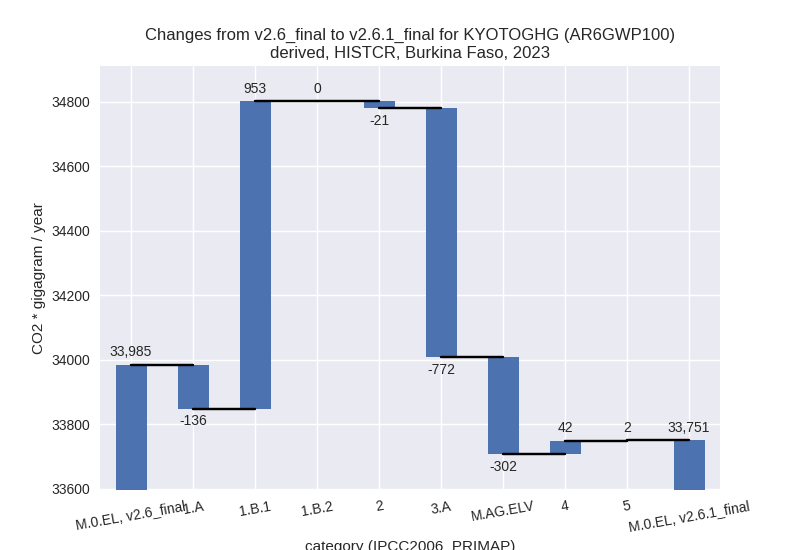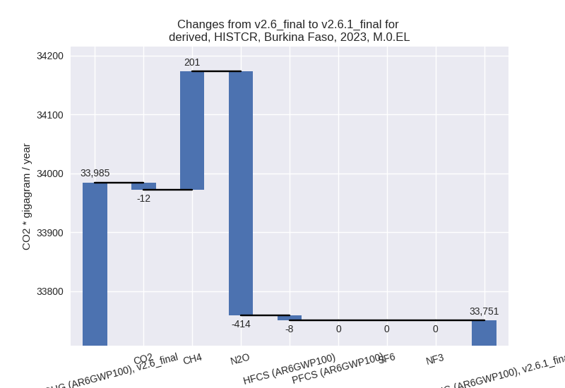
1990-2023
 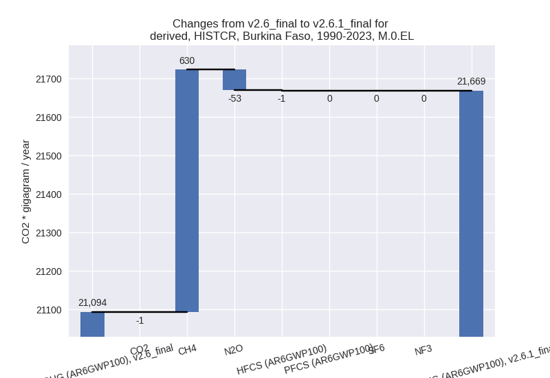
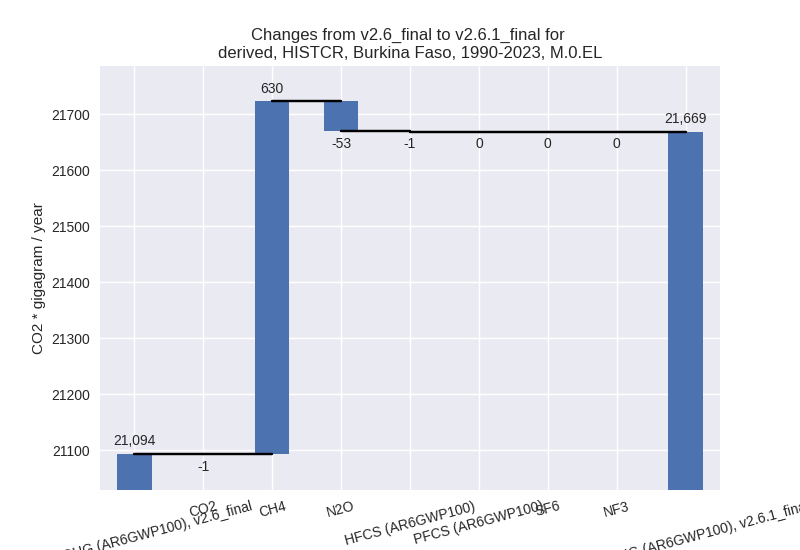
third party scenario
2023

1990-2023
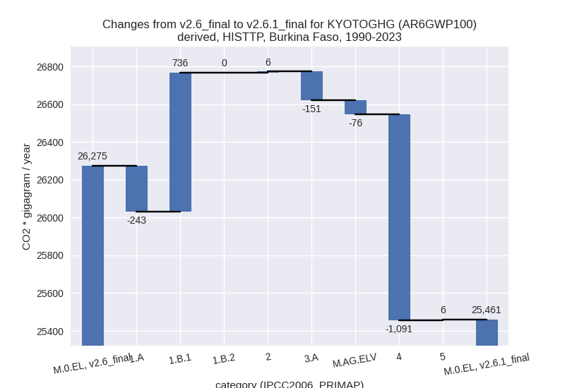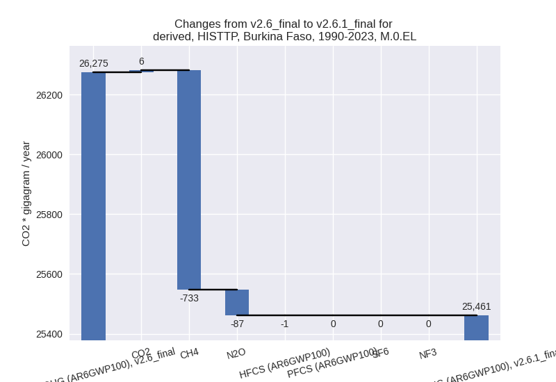
Detailed changes for the scenarios:
country reported scenario (HISTCR):
Most important changes per time frame
For 2023 the following sector-gas combinations have the highest absolute impact on national total KyotoGHG (AR6GWP100) emissions in 2023 (top 5):
- 1: 1.B.1, CH4 with 940.45 Gg CO2 / year (109.8%)
- 2: 3.A, CH4 with -635.06 Gg CO2 / year (-4.3%)
- 3: M.AG.ELV, N2O with -300.14 Gg CO2 / year (-3.9%)
- 4: 3.A, N2O with -136.65 Gg CO2 / year (-33.6%)
- 5: 1.A, CH4 with -119.83 Gg CO2 / year (-9.9%)
For 1990-2023 the following sector-gas combinations have the highest absolute impact on national total KyotoGHG (AR6GWP100) emissions in 1990-2023 (top 5):
- 1: 1.B.1, CH4 with 726.27 Gg CO2 / year (130.6%)
- 2: 3.A, CH4 with -129.99 Gg CO2 / year (-1.3%)
- 3: M.AG.ELV, N2O with -58.46 Gg CO2 / year (-1.1%)
- 4: 4, CH4 with 30.31 Gg CO2 / year (1.9%)
- 5: 3.A, N2O with -14.39 Gg CO2 / year (-5.4%)
Changes in the main sectors for aggregate KyotoGHG (AR6GWP100) are
- 1: Total sectoral emissions in 2022 are 7691.74 Gg
CO2 / year which is 23.0% of M.0.EL emissions. 2023 Emissions have
changed by 12.1% (816.91 Gg CO2 /
year). 1990-2023 Emissions have changed by 20.9% (740.70 Gg CO2 / year). For 2023 the
changes per gas
are:
For 1990-2023 the changes per gas are:
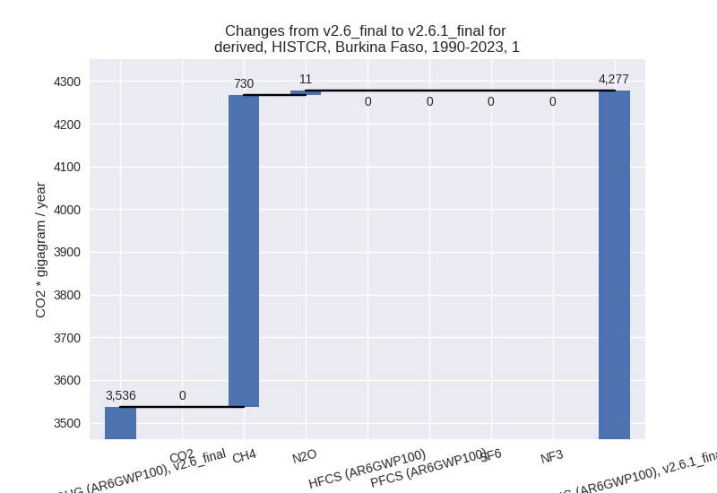
The changes come from the following subsectors:- 1.A: Total sectoral emissions in 2022 are 5871.01
Gg CO2 / year which is 76.3% of category 1 emissions. 2023 Emissions
have changed by -2.3% (-136.02 Gg
CO2 / year). 1990-2023 Emissions have changed by 0.2% (4.80 Gg CO2 / year). For 2023 the
changes per gas
are:
There is no subsector information available in PRIMAP-hist. - 1.B.1: Total sectoral emissions in 2022 are 1820.72
Gg CO2 / year which is 23.7% of category 1 emissions. 2023 Emissions
have changed by 109.8% (952.92 Gg
CO2 / year). 1990-2023 Emissions have changed by 130.6% (735.90 Gg CO2 / year). For 2023
the changes per gas
are:
For 1990-2023 the changes per gas are:
There is no subsector information available in PRIMAP-hist. - 1.B.2: Total sectoral emissions in 2022 are 0.01 Gg
CO2 / year which is 0.0% of category 1 emissions. 2023 Emissions have
changed by 720.4% (0.01 Gg CO2 /
year). 1990-2023 Emissions have changed by 215.3% (0.01 Gg CO2 / year). For 2023 the
changes per gas
are:
For 1990-2023 the changes per gas are:
There is no subsector information available in PRIMAP-hist.
- 1.A: Total sectoral emissions in 2022 are 5871.01
Gg CO2 / year which is 76.3% of category 1 emissions. 2023 Emissions
have changed by -2.3% (-136.02 Gg
CO2 / year). 1990-2023 Emissions have changed by 0.2% (4.80 Gg CO2 / year). For 2023 the
changes per gas
are:
- 2: Total sectoral emissions in 2022 are 1229.58 Gg CO2 / year which is 3.7% of M.0.EL emissions. 2023 Emissions have changed by -1.5% (-20.51 Gg CO2 / year). 1990-2023 Emissions have changed by -0.4% (-1.49 Gg CO2 / year).
- M.AG: Total sectoral emissions in 2022 are 21446.21
Gg CO2 / year which is 64.2% of M.0.EL emissions. 2023 Emissions have
changed by -4.7% (-1074.20 Gg CO2 /
year). 1990-2023 Emissions have changed by -1.3% (-203.01 Gg CO2 / year). For 2023
the changes per gas
are:
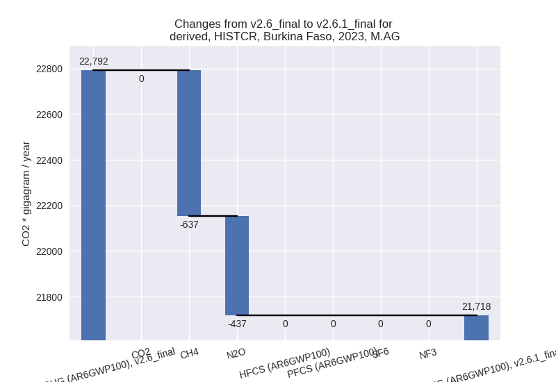
The changes come from the following subsectors:- 3.A: Total sectoral emissions in 2022 are 14134.38
Gg CO2 / year which is 65.9% of category M.AG emissions. 2023 Emissions
have changed by -5.1% (-771.71 Gg
CO2 / year). 1990-2023 Emissions have changed by -1.4% (-144.38 Gg CO2 / year). For 2023
the changes per gas
are:
There is no subsector information available in PRIMAP-hist. - M.AG.ELV: Total sectoral emissions in 2022 are
7311.82 Gg CO2 / year which is 34.1% of category M.AG emissions. 2023
Emissions have changed by -3.9%
(-302.49 Gg CO2 / year). 1990-2023 Emissions have changed by -1.1% (-58.63 Gg CO2 / year). For 2023 the
changes per gas
are:
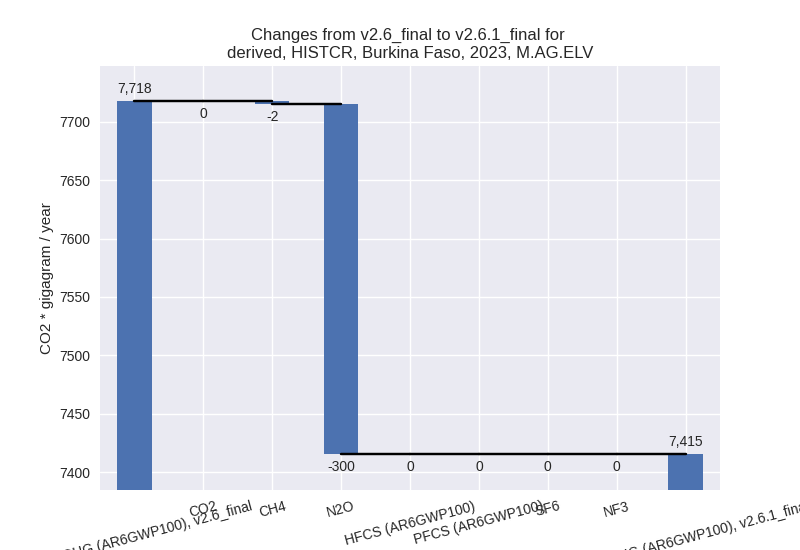
There is no subsector information available in PRIMAP-hist.
- 3.A: Total sectoral emissions in 2022 are 14134.38
Gg CO2 / year which is 65.9% of category M.AG emissions. 2023 Emissions
have changed by -5.1% (-771.71 Gg
CO2 / year). 1990-2023 Emissions have changed by -1.4% (-144.38 Gg CO2 / year). For 2023
the changes per gas
are:
- 4: Total sectoral emissions in 2022 are 2796.32 Gg CO2 / year which is 8.4% of M.0.EL emissions. 2023 Emissions have changed by 1.5% (41.54 Gg CO2 / year). 1990-2023 Emissions have changed by 1.9% (33.10 Gg CO2 / year).
- 5: Total sectoral emissions in 2022 are 239.80 Gg
CO2 / year which is 0.7% of M.0.EL emissions. 2023 Emissions have
changed by 0.9% (2.39 Gg CO2 /
year). 1990-2023 Emissions have changed by 2.5% (5.90 Gg CO2 / year). For 1990-2023
the changes per gas
are:
third party scenario (HISTTP):
Most important changes per time frame
For 2023 the following sector-gas combinations have the highest absolute impact on national total KyotoGHG (AR6GWP100) emissions in 2023 (top 5):
- 1: 4, CH4 with -1830.85 Gg CO2 / year (-44.5%)
- 2: 1.B.1, CH4 with 940.45 Gg CO2 / year (109.8%)
- 3: 1.A, CH4 with -845.68 Gg CO2 / year (-39.8%)
- 4: 3.A, CH4 with -668.24 Gg CO2 / year (-4.3%)
- 5: M.AG.ELV, N2O with -347.04 Gg CO2 / year (-3.9%)
For 1990-2023 the following sector-gas combinations have the highest absolute impact on national total KyotoGHG (AR6GWP100) emissions in 1990-2023 (top 5):
- 1: 4, CH4 with -1095.35 Gg CO2 / year (-44.9%)
- 2: 1.B.1, CH4 with 726.27 Gg CO2 / year (130.6%)
- 3: 1.A, CH4 with -218.73 Gg CO2 / year (-14.2%)
- 4: 3.A, CH4 with -136.79 Gg CO2 / year (-1.3%)
- 5: M.AG.ELV, N2O with -67.95 Gg CO2 / year (-1.1%)
Changes in the main sectors for aggregate KyotoGHG (AR6GWP100) are
- 1: Total sectoral emissions in 2022 are 7768.62 Gg
CO2 / year which is 20.3% of M.0.EL emissions. 2023 Emissions have
changed by 0.1% (10.18 Gg CO2 /
year). 1990-2023 Emissions have changed by 11.5% (492.95 Gg CO2 / year). For
1990-2023 the changes per gas
are:
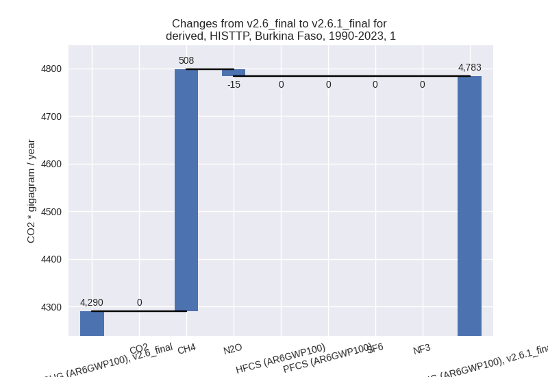
The changes come from the following subsectors:- 1.A: Total sectoral emissions in 2022 are 5947.89
Gg CO2 / year which is 76.6% of category 1 emissions. 2023 Emissions
have changed by -14.0% (-942.76 Gg
CO2 / year). 1990-2023 Emissions have changed by -6.5% (-242.95 Gg CO2 / year). For 2023
the changes per gas
are:
For 1990-2023 the changes per gas are:
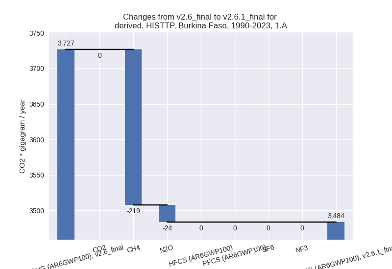
There is no subsector information available in PRIMAP-hist. - 1.B.1: Total sectoral emissions in 2022 are 1820.72
Gg CO2 / year which is 23.4% of category 1 emissions. 2023 Emissions
have changed by 109.8% (952.92 Gg
CO2 / year). 1990-2023 Emissions have changed by 130.6% (735.90 Gg CO2 / year). For 2023
the changes per gas
are:
For 1990-2023 the changes per gas are:
There is no subsector information available in PRIMAP-hist. - 1.B.2: Total sectoral emissions in 2022 are 0.01 Gg
CO2 / year which is 0.0% of category 1 emissions. 2023 Emissions have
changed by 720.4% (0.01 Gg CO2 /
year). 1990-2023 Emissions have changed by 215.3% (0.01 Gg CO2 / year). For 2023 the
changes per gas
are:
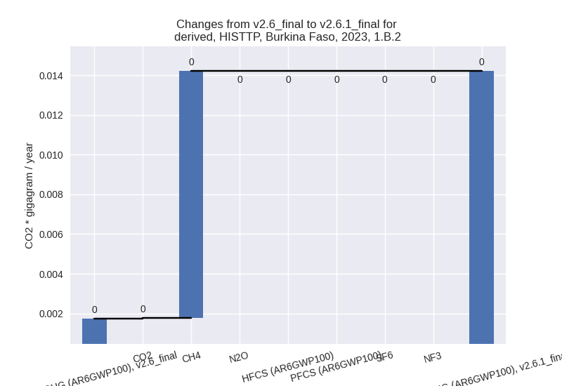
For 1990-2023 the changes per gas are:
There is no subsector information available in PRIMAP-hist.
- 1.A: Total sectoral emissions in 2022 are 5947.89
Gg CO2 / year which is 76.6% of category 1 emissions. 2023 Emissions
have changed by -14.0% (-942.76 Gg
CO2 / year). 1990-2023 Emissions have changed by -6.5% (-242.95 Gg CO2 / year). For 2023
the changes per gas
are:
- 2: Total sectoral emissions in 2022 are 2462.87 Gg CO2 / year which is 6.4% of M.0.EL emissions. 2023 Emissions have changed by -0.0% (-0.44 Gg CO2 / year). 1990-2023 Emissions have changed by 0.7% (5.63 Gg CO2 / year).
- M.AG: Total sectoral emissions in 2022 are 25192.71
Gg CO2 / year which is 66.0% of M.0.EL emissions. 2023 Emissions have
changed by -4.7% (-1268.77 Gg CO2 /
year). 1990-2023 Emissions have changed by -1.2% (-227.59 Gg CO2 / year). For 2023
the changes per gas
are:
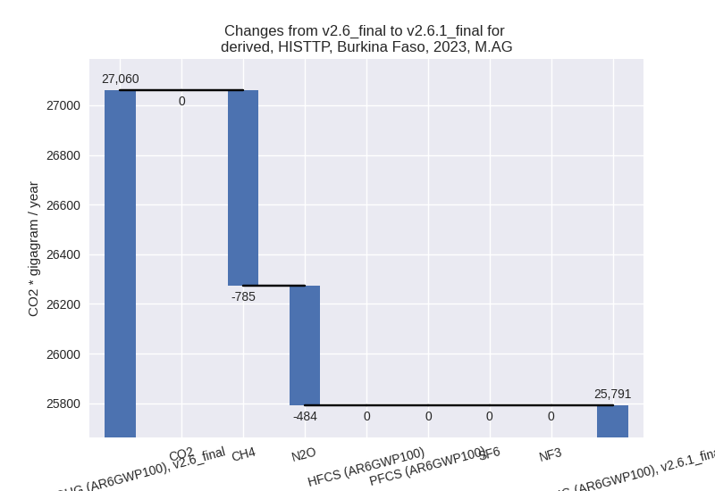
The changes come from the following subsectors:- 3.A: Total sectoral emissions in 2022 are 14858.07
Gg CO2 / year which is 59.0% of category M.AG emissions. 2023 Emissions
have changed by -5.1% (-804.89 Gg
CO2 / year). 1990-2023 Emissions have changed by -1.4% (-151.17 Gg CO2 / year). For 2023
the changes per gas
are:
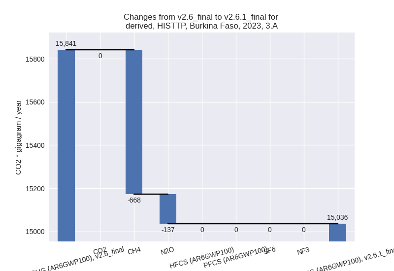
There is no subsector information available in PRIMAP-hist. - M.AG.ELV: Total sectoral emissions in 2022 are
10334.65 Gg CO2 / year which is 41.0% of category M.AG emissions. 2023
Emissions have changed by -4.1%
(-463.88 Gg CO2 / year). 1990-2023 Emissions have changed by -1.0% (-76.42 Gg CO2 / year). For 2023 the
changes per gas
are:
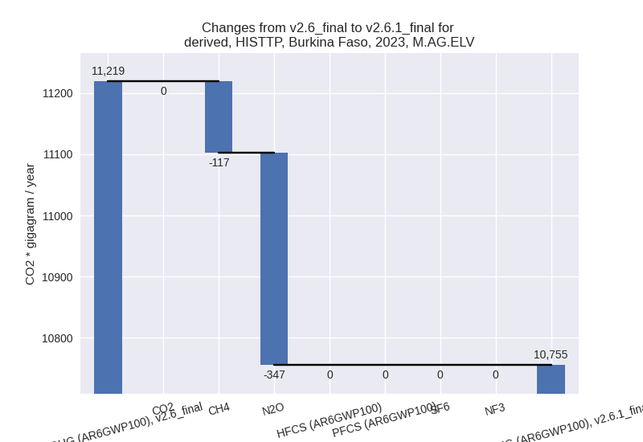
There is no subsector information available in PRIMAP-hist.
- 3.A: Total sectoral emissions in 2022 are 14858.07
Gg CO2 / year which is 59.0% of category M.AG emissions. 2023 Emissions
have changed by -5.1% (-804.89 Gg
CO2 / year). 1990-2023 Emissions have changed by -1.4% (-151.17 Gg CO2 / year). For 2023
the changes per gas
are:
- 4: Total sectoral emissions in 2022 are 2532.89 Gg
CO2 / year which is 6.6% of M.0.EL emissions. 2023 Emissions have
changed by -40.6% (-1791.54 Gg CO2 /
year). 1990-2023 Emissions have changed by -41.5% (-1090.84 Gg CO2 / year). For 2023
the changes per gas
are:
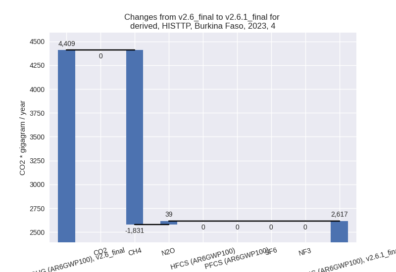
For 1990-2023 the changes per gas are: - 5: Total sectoral emissions in 2022 are 239.80 Gg
CO2 / year which is 0.6% of M.0.EL emissions. 2023 Emissions have
changed by 0.9% (2.39 Gg CO2 /
year). 1990-2023 Emissions have changed by 2.5% (5.90 Gg CO2 / year). For 1990-2023
the changes per gas
are:
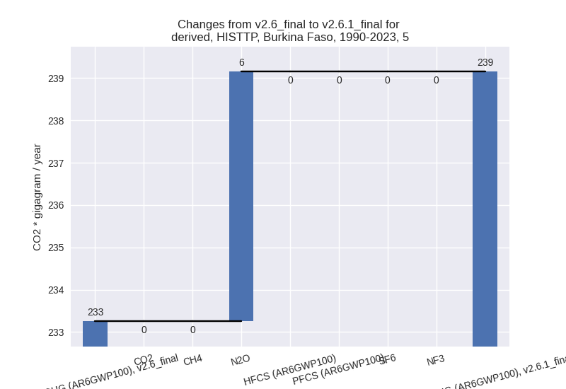